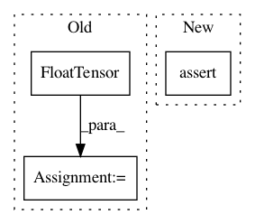

4cbe889c27f5a0c272c54b4e1065ef3525c2fc09,s2cnn/ops/gpu/s2_mm.py,,s2_mm,#Any#Any#,47
Before Change
cuda_kernel = _setup_s2mm_cuda_kernel(nbatch=nbatch, nspec=nspec, nfeature_in=nfeature_in, nfeature_out=nfeature_out)
stream = cuda_utils.Stream(ptr=torch.cuda.current_stream().cuda_stream)
output = torch.cuda.FloatTensor(nspec, nbatch, nfeature_out, 2)
cuda_kernel(block=(cuda_utils.CUDA_NUM_THREADS, 1, 1),
grid=(cuda_utils.get_blocks(nspec * nbatch * nfeature_out, 1024), 1, 1),
args=[x.data_ptr(), y.data_ptr(), output.data_ptr()],
stream=stream)
After Change
:return: [l * m * n, batch, feature_out, complex]
"""
assert x.is_cuda and x.dtype == torch.float32
assert y.is_cuda and y.dtype == torch.float32
assert y.size(3) == 2
assert x.size(3) == 2
nbatch = x.size(1)
nfeature_in = x.size(2)
In pattern: SUPERPATTERN
Frequency: 6
Non-data size: 3
Instances
Project Name: jonas-koehler/s2cnn
Commit Name: 4cbe889c27f5a0c272c54b4e1065ef3525c2fc09
Time: 2018-05-02
Author: geiger.mario@gmail.com
File Name: s2cnn/ops/gpu/s2_mm.py
Class Name:
Method Name: s2_mm
Project Name: rusty1s/pytorch_geometric
Commit Name: 01b293b84fd2b1eeb80a01afe44d341d9c9c6486
Time: 2018-04-29
Author: matthias.fey@tu-dortmund.de
File Name: test/utils/test_degree.py
Class Name:
Method Name: test_degree
Project Name: facebookresearch/SentEval
Commit Name: 9b1126c25af2105531505d8a3c864f3221c61fac
Time: 2018-05-06
Author: aconneau@fb.com
File Name: examples/models.py
Class Name: BLSTMEncoder
Method Name: forward
Project Name: jonas-koehler/s2cnn
Commit Name: 4cbe889c27f5a0c272c54b4e1065ef3525c2fc09
Time: 2018-05-02
Author: geiger.mario@gmail.com
File Name: s2cnn/ops/gpu/so3_mm.py
Class Name:
Method Name: so3_mm
Project Name: rusty1s/pytorch_geometric
Commit Name: 6627e8f74bc46a294dda7d6b12260883a63f038b
Time: 2018-01-12
Author: matthias.fey@tu-dortmund.de
File Name: torch_geometric/nn/functional/pool/pool_test.py
Class Name: PoolTest
Method Name: test_backward
Project Name: rusty1s/pytorch_geometric
Commit Name: 455a0dc9a98212089a7201a025670c33a1770f67
Time: 2017-10-23
Author: matthias.fey@tu-dortmund.de
File Name: torch_geometric/nn/functional/spline_gcn_test.py
Class Name: SplineGcnTest
Method Name: test_backward